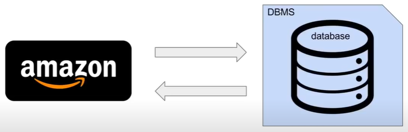

SQL là ngôn ngữ được sử dụng để tương tác với các hệ quản trị cơ sở dữ liệu quan hệ và một hệ quản lý cơ sở dữ liệu quan hệ. Về cơ bản chỉ là một ứng dụng phần mềm mà ta có thể sử dụng để tạo và quản lý các cơ sở dữ liệu khác nhau Và vì vậy, chúng ta sẽ nói về tất cả những thứ này.
Data base thường được viết tắt với tên DB. Đó là tập hợp thông tin liên quan có thể được lưu trữ theo nhiều cách khác nhau.
Lưu trữ một bộ sưu tập thông tin liên quan trên máy tính là vô cùng hữu ích và máy tính thực sự tuyện vời để lưu trữ cơ sở dữ liệu.
Chúng ta có danh sách mua sắm là một cơ sở dữ liệu. Đó là tập hợp các thông tin liên quan. Một bộ sưu tập các SP mà bạn muốn mua từ cửa hàng, Amazon cũng là một cơ sở dữ liệu. Amazon đang lưu trữ tất cả thông tin SP này, tất cả thông tin người dùng này. Họ đang lưu trữ các bài đánh giá về sản phẩm, giá cả của SP , họ đang lưu trữ tất cả thông tin này
